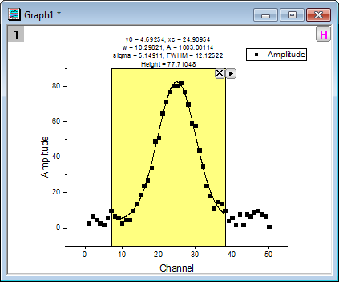

Minitool Quick Fit
Quick-Fit-Gadget
Zusammenfassung
Das Minitool Quick Fit kann verwendet werden, um schnell eine Kurvenanpassung in der grafischen Datenauswahl (ROI, Region of Interest) durchzuführen.
Origin-Version mind. erforderlich: Origin 8.6 SR0
Was Sie lernen werden
Dieses Tutorial zeigt Ihnen, wie Sie:
- eine lineare Anpassung mit dem Minitool Quick Fit durchführen.
- eine nichtlineare Kurvenanpassung mit dem Minitool Quick Fit durchführen.
- ein Dialogdesign speichern und erneut verwenden.
Schritte
Lineare Anpassung
- Öffnen Sie Origin und wählen Sie Daten: Aus Datei importieren: Importassistent. Durchsuchen Sie die Datenquelle nach <Origin>/Samples/Curve Fitting und fügen Sie die Datei Step01.dat hinzu. Beachten Sie, dass der Importfilter Data Folder: step automatisch gewählt ist (wird in dem Feld Importfilter für aktuellen Datentyp gezeigt), wenn diese Datei ausgewählt wird . Klicken Sie auf Fertigstellen, um die Datei zu importieren.
- Markieren Sie Spalte A bis F und klicken Sie auf die Schaltfläche
 , um ein Punktdiagramm zu erstellen.
, um ein Punktdiagramm zu erstellen.
- Wählen Sie Minitools: Quick Fit: 1 Linear (System) im Hauptmenü, um eine grafische Datenauswahl (ROI) im Diagramm einzufügen. Klicken Sie auf die Schaltfläche mit dem Pfeil
 und wählen Sie Auf gesamten Diagrammbereich erweitern im Ausklappmenü, um die grafische Datenauswahl (ROI) auf das gesamte Diagramm zu erweitern.
und wählen Sie Auf gesamten Diagrammbereich erweitern im Ausklappmenü, um die grafische Datenauswahl (ROI) auf das gesamte Diagramm zu erweitern.
- Klicken Sie auf die Schaltfläche mit dem Pfeil und wählen Sie Einstellungen im Ausklappmenü. Der Dialog Quick Fit Einstellungen wird aufgerufen. Wechseln Sie in diesem Dialog zur Registerkarte Beschriftungsfeld und wählen Sie Gleichung mit Werten in der Auswahlliste Gleichung.
- Wechseln Sie zur Registerkarte Bericht und wählen Sie Arbeitsblatt in der Auswahlliste Ausgabe in.
- Klicken Sie auf OK, um diesen Dialog zu schließen. Klicken Sie auf die Schaltfläche mit dem Pfeil und wählen Sie Neue Ausgabe im Ausklappmenü. Die Anpassungsergebnisse von "Sensor 01" werden in dem Berichtsblatt ausgegeben und zu dem Diagrammfenster wird ein Beschriftungsfeld hinzugefügt. Das Beschriftungsfeld führt Ihre Analyseergebnisse auf.
- Markieren Sie das Beschriftungsfeld auf dem Diagramm und löschen sie es. Klicken Sie auf die Schaltfläche mit dem Pfeil und wählen Sie Einstellungen im Ausklappmenü. Der Dialog Quick Fit Einstellungen wird aufgerufen. Wechseln Sie in diesem Dialog zu der Registerkarte Beschriftungsfeld, deaktivieren Sie das Kontrollkästchen Beschriftungsfeld zum Diagramm hinzufügen und klicken Sie auf OK.
- Klicken Sie erneut auf die Pfeilschaltfläche , um Neue Ausgabe für alle Kurven (N) im Ausklappmenü auszuwählen, so dass der benutzerdefinierte Prozess der linearen Anpassung auf alle Datenzeichnungen durchgeführt wird.
- Klicken Sie ein weiteres Mal auf die Pfeilschaltfläche und wählen Sie Zum Berichtsblatt gehen. Die Anpassungsergebnisse von allen drei Zeichnungen werden in dem Berichtsblatt angezeigt. Beachten Sie, dass die erste Ergebniszeile in Schritt 6 oben erstellt wurde und die letzten drei Zeilen die aktuellen Ergebnisse sind.
| Hinweis: Sie können bei im Diagramm angezeigtem ROI-Feld auf die Pfeilschaltfläche klicken, um die Option Zu linearer Anpassung wechseln im Ausklappmenü auszuwählen. Ihre aktuellen Einstellungen werden in den Dialog Linearer Fit übertragen. In diesem leistungsstarken Dialog stehen weitere Operationen für die lineare Anpassung zur Verfügung. |
Nichtlinearer Fit
- Öffnen Sie eine neue Arbeitsmappe und importieren Sie die Origin-Beispieldaten der Datei Gaussian.DAT, die sich im <Origin-Programmverzeichnis>\Samples\Curve fitting befindet.
- Markieren Sie Col(B) und wählen Sie Zeichnen: 2D: Symbol: Punktdiagramm im Origin-Menü, um ein Diagramm zu zeichnen.

- Wählen Sie Minitools: Quick Fit: 4 Peak - Gauss (System) im Origin-Menü, um ein ROI-Feld in das Diagramm einzufügen.
- 
- Klicken Sie auf die Schaltfläche mit dem Pfeil und wählen Sie Auf gesamten Diagrammbereich erweitern im Ausklappmenü, um die grafische Datenauswahl (ROI) auf das gesamte Diagramm zu erweitern.
- Klicken Sie auf die Schaltfläche mit dem Pfeil und wählen Sie Einstellungen im Ausklappmenü. Der Dialog Quick Fit Einstellungen wird aufgerufen. Wechseln Sie in diesem Dialog zur Registerkarte Grafische Datenauswahl und legen Sie die Parameterliste, wie unten zu sehen, fest.
- Klicken Sie auf OK, um den Dialog zu schließen. Klicken Sie auf die Schaltfläche mit dem Pfeil und wählen Sie Neue Ausgabe im Ausklappmenü. Zu dem Diagramm wird, wie unten gezeigt, ein Beschriftungsfeld hinzugefügt.
- Klicken Sie auf die Schaltfläche mit dem Pfeil und wählen Sie Einstellungen im Ausklappmenü. Der Dialog Quick Fit Einstellungen wird erneut aufgerufen. Wechseln Sie in diesem Dialog zur Registerkarte Beschriftungsfeld und wählen Sie Registerkarteneinstellungen der grafischen Datenauswahl verwenden für Parametertabelle. Klicken Sie auf OK, um den Dialog zu schließen.
- Klicken Sie erneut auf die Schaltfläche mit dem Pfeil und wählen Sie Neue Ausgabe aktualisieren im Ausklappmenü. Das Beschriftungsfeld wird aktualisiert und nur die Parameter "xc" und "FWHM" werden angezeigt.
- Klicken Sie auf die Schaltfläche mit dem Pfeil und wählen Sie Design speichern im Ausklappmenü. Legen Sie im Dialog Design speichern unter... den Designnamen mit My_Gauss fest und klicken Sie auf OK.
- Kehren Sie zurück zum Arbeitsblatt, markieren Sie Spalte col(C) und wählen Sie Zeichnen: 2D: Symbol: Punktdiagramm im Menü. Ein Punktdiagramm wird gezeichnet.
- Klicken Sie auf die neue Zeichnung, um sie zu aktivieren und wählen Sie Minitools: Quick Fit: 9 My_Gauss, um das Design zu laden. Das Feld einer grafischen Datenauswahl wird zu dem Diagramm hinzugefügt, wobei die Parameter xc und FWHM oberhalb des Feldes angezeigt werden.
- Klicken Sie auf die Schaltfläche mit dem Pfeil , um die Option Auf gesamten Diagrammbereich erweitern im Ausklappmenü auszuwählen und damit das gesamte Diagramm in die grafische Datenauswahl einzuschließen. Wählen Sie dann Neue Ausgabe im Ausklappmenü, um das Ergebnis auszugeben. Sie können sehen, dass unser Design angewendet wird, da das Beschriftungsfeld im Diagramm nur die Werte der Parameter "xc" und "FWHM" aufführt.
| Hinweis: Sie können bei im Diagramm angezeigtem ROI-Feld auf die Pfeilschaltfläche klicken, um die Option Zu nichtlinearer Anpassung wechseln im Ausklappmenü auszuwählen. Ihre aktuellen Einstellungen werden in den Dialog NLFit übertragen. In diesem leistungsstarken Dialog stehen weitere Operationen für die nichtlineare Anpassung zur Verfügung. |